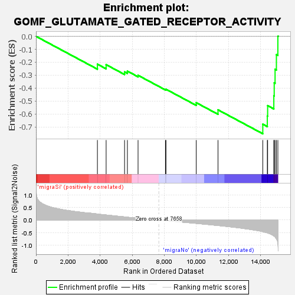
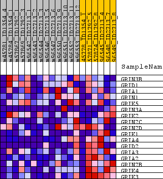
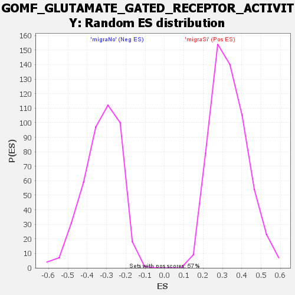

| Dataset | normalized_counts_collapsed_to_symbols.phenotype_labels.cls #migraSi_versus_migraNo.phenotype_labels.cls #migraSi_versus_migraNo_repos |
| Phenotype | phenotype_labels.cls#migraSi_versus_migraNo_repos |
| Upregulated in class | migraNo |
| GeneSet | GOMF_GLUTAMATE_GATED_RECEPTOR_ACTIVITY |
| Enrichment Score (ES) | -0.7531894 |
| Normalized Enrichment Score (NES) | -2.324853 |
| Nominal p-value | 0.0 |
| FDR q-value | 0.001142456 |
| FWER p-Value | 0.012 |

| SYMBOL | TITLE | RANK IN GENE LIST | RANK METRIC SCORE | RUNNING ES | CORE ENRICHMENT | |
|---|---|---|---|---|---|---|
| 1 | GRIN3B | glutamate ionotropic receptor NMDA type subunit 3B [Source:HGNC Symbol;Acc:HGNC:16768] | 3832 | 0.240 | -0.2153 | No |
| 2 | GRID1 | glutamate ionotropic receptor delta type subunit 1 [Source:HGNC Symbol;Acc:HGNC:4575] | 4376 | 0.200 | -0.2191 | No |
| 3 | GRIA1 | glutamate ionotropic receptor AMPA type subunit 1 [Source:HGNC Symbol;Acc:HGNC:4571] | 5526 | 0.124 | -0.2753 | No |
| 4 | GRIN1 | glutamate ionotropic receptor NMDA type subunit 1 [Source:HGNC Symbol;Acc:HGNC:4584] | 5703 | 0.111 | -0.2690 | No |
| 5 | GRIK5 | glutamate ionotropic receptor kainate type subunit 5 [Source:HGNC Symbol;Acc:HGNC:4583] | 6368 | 0.072 | -0.3014 | No |
| 6 | GRIN3A | glutamate ionotropic receptor NMDA type subunit 3A [Source:HGNC Symbol;Acc:HGNC:16767] | 8076 | -0.023 | -0.4108 | No |
| 7 | GRIK2 | glutamate ionotropic receptor kainate type subunit 2 [Source:HGNC Symbol;Acc:HGNC:4580] | 8110 | -0.025 | -0.4089 | No |
| 8 | GRIN2C | glutamate ionotropic receptor NMDA type subunit 2C [Source:HGNC Symbol;Acc:HGNC:4587] | 9997 | -0.131 | -0.5128 | No |
| 9 | GRIN2D | glutamate ionotropic receptor NMDA type subunit 2D [Source:HGNC Symbol;Acc:HGNC:4588] | 11356 | -0.215 | -0.5681 | No |
| 10 | GRIK1 | glutamate ionotropic receptor kainate type subunit 1 [Source:HGNC Symbol;Acc:HGNC:4579] | 14150 | -0.459 | -0.6793 | Yes |
| 11 | GRIA4 | glutamate ionotropic receptor AMPA type subunit 4 [Source:HGNC Symbol;Acc:HGNC:4574] | 14432 | -0.505 | -0.6167 | Yes |
| 12 | GRID2 | glutamate ionotropic receptor delta type subunit 2 [Source:HGNC Symbol;Acc:HGNC:4576] | 14452 | -0.510 | -0.5358 | Yes |
| 13 | GRIA3 | glutamate ionotropic receptor AMPA type subunit 3 [Source:HGNC Symbol;Acc:HGNC:4573] | 14838 | -0.628 | -0.4603 | Yes |
| 14 | GRIA2 | glutamate ionotropic receptor AMPA type subunit 2 [Source:HGNC Symbol;Acc:HGNC:4572] | 14862 | -0.636 | -0.3593 | Yes |
| 15 | GRIN2B | glutamate ionotropic receptor NMDA type subunit 2B [Source:HGNC Symbol;Acc:HGNC:4586] | 14916 | -0.667 | -0.2555 | Yes |
| 16 | GRIK4 | glutamate ionotropic receptor kainate type subunit 4 [Source:HGNC Symbol;Acc:HGNC:4582] | 14999 | -0.741 | -0.1416 | Yes |
| 17 | GRIK3 | glutamate ionotropic receptor kainate type subunit 3 [Source:HGNC Symbol;Acc:HGNC:4581] | 15090 | -0.925 | 0.0013 | Yes |

